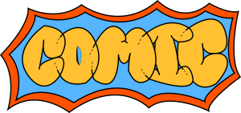
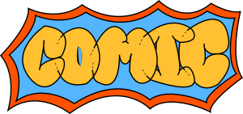
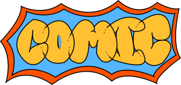
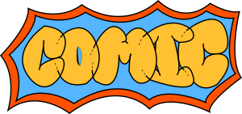

Es la antigua capitana de la nave. Es una persona muy alegre, servicial, que le gusta ayudar a los demás y siempre está tratando de apoyar a todos sus amigos.
Él es un impostor con un carácter terrible, le gusta salirse con la suya y nunca obedece las órdenes que le dan, está enamorado de cian por quien daría cualquier cosa por ella.
Ella es una impostora a quien no le gusta matar a nadie, es una persona muy divertida y cariñosa que le gusta hablar siempre con la verdad y haría cualquier cosa por ver sonreír a sus seres queridos.
Él es un impostor que sufrió mucho en su infancia y por eso siempre oculta su verdadera personalidad, siempre se muestra a las personas que más quiere, le gusta leer libros y preparar comidas deliciosas.
Cian es la encargada de la vigilancia en las cámaras, es una chica muy alegre que le gusta que la consientan mucho, su pasatiempo favorito es tocar la guitarra y pasar tiempo con sus amigos.
Es un tripulante muy indeciso, ha sufrido mucho en el amor y no sabe si podría resistir el hecho de volverse a enamorar, sin embargo, lo intentará; también es valiente y no duda en luchar por sus amigos.
Es una tripulante muy amigable, siempre quiere ayudar a sus amigos, es un poco tímida, siempre ha querido tener una familia y poder siempre estar junto a sus buenos amigos.
Es un tripulante que demuestra un gran entusiasmo por la vida, es muy sociable y le gusta hacer fiestas con sus amigos, le encanta divertirse, sentir emociones nueva, es muy decidido, claro con lo que se propone a cumplir y no se descansara hasta verlas finalizadas.

Es la capitana de la nave, una impostora que está en contra de matar a la gente sin una justificación. Es una persona que se toma muy en serio su trabajo y aunque se ve como una persona fría, realmente es todo lo contrario.
Brayan es un chico muy tímido y temeroso que depende de una relación para estar estable emocionalmente, porque se siente rechazado en el amor.
Es una chica alegre a quien le gusta bailar y disfrutar de la vida. Siempre está dispuesta a ayudar y no le gusta verlos tristes, su pasatiempo es jugar con su mascota y tomarse selfies con Sakura.
Ella es una chica divertida a la que le gusta hacer reír a los demás, siempre esta a la moda y siempre pronuncia mal las palabras a propósito para molestar a Keyler. Su pasatiempo favorito es cuidar a su hijo Noah y tomarse fotos con Hinata.
Es un hombre tranquilo, alegre y servicial. Le gustan mucho las películas de terror, también es muy atento con la persona que le gusta y puede llegar a ser un poco celoso. Le gustan los gatos y pasar tiempo con su pareja.
Kira es una chica con un pasado oscuro lo cual afecta mucho su estabilidad emocional, ella se muestra como una chica alegre y dulce; pero si alguien no hace lo que ella dice su carácter se vuelve agresivo, llegando al punto de dejarlos sin vida.
Es un chico con una personalidad infantil, suele ser alegre, siempre tiene mucha confianza en sí mismo y no le importa lo que los demás piensen de él. Tiene un amor incondicional al chocolate y le tiene miedo a los perros grandes.
Es el ayudante de la capitana, suele ser un chico alegre que le gusta ayudar y apoyar a sus amigos. Siempre se muestra con una personalidad calmada y relajada ante cualquier situación y no dudará dar su vida para salvar a la capitana.
Kenji es un chico alegre, optimista y un poco pervertido. Le gusta mucho jugar futbol y básquet. Es muy protector con su pareja e hijo, ya que no los quiere perder por nada del mundo, odia comer dulces que contengan arequipe y nueces porque no las tolera.

Es un chico extrovertido que siempre se la pasa hablando de sus amores fallidos. Llegando a ser un poco pesado, le gusta jugar videojuegos de aventuras y terroríficas. Se enoja si su celular se descarga en plena partida.
Es una alíen cuyo propósito es impulsar a los impostores a cumplir el legado de acabar con los tripulantes. Suele burlarse de las personas utilizando el sarcasmo y odia los animales. Suele tener una actitud de superioridad enfrente de otras personas.